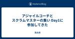
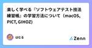

直近1週間の更新
10/10 (木)

アジャイルコーチとスクラムマスターの集い Day1に参加してきた 天の月
www.attractor.co.jp 今日からアトラクタさんが主催のリトリートに参加してきているので、会の様子を書いていこうと思います。 申し込み忘れていて参加を諦めていたのですが、急遽欠員が出そうということで、欠員される方と話をして代理で行けることになったので参加しました！ 到着まで Hideさんとお話する むとうさんに挨拶する お昼ごはんを食べる 小井さんに挨拶する Ackyさんと話す オープニング OSTテーマ1 JKさんAckyさんと話す アジャイルコーチとコンサルタント OODAやDX 早く成長するチーム 丸谷さんみやちさんと話す 境界ゲーム 夜ご飯 みほらぶさん洋さんと話す お風…
16時間前
10/9 (水)

Flutterにおけるテストの作法 Zennの「Test」のフィード
はじめに 自分自身はWebエンジニア出身でFlutterでの開発経験はほぼ皆無なのですが、個人的に最近Flutterの勉強を始めています。 今回はFlutterにおいてテストはどう書いていくのがよいのか調べてみました。 公式ドキュメント テストについては公式ドキュメントが一番よくまとまっています。概要を掴むには日本語の記事でもよいですが、まずは公式のものからあたるのが良いです。 テストのサンプルはこちらのcodelabで学ぶことができます。 https://codelabs.developers.google.com/codelabs/flutter-app-testing?hl...
1日前

改めまして、ボク亀井です。その3 Zennの「QA」のフィード
はじめに 改めまして、ボク亀井です。その2の続きです。 10月26日、秋の旬なアーキテクチャLT会 supported by KIKKAKE CREATIONに登壇するので、棚卸しをしています。自分を知ってもらう機会かと思い、Zennにも投稿します〜 プログラミング言語 Perl Java(1.4とかw) Struts JavaScript PrototypeJS jQuery Vue Node Next.js PHP Cake Laravel Python SQL 設計 機能設計 DB設計 アーキテクチャ設計 他 Docker ラズパイ Po...
1日前

JSTQB Conference in 2024 Autumnのパネルディスカッションに登壇したよ テストする人。
JSTQB Conference in 2024 Autumn https://jstqb.jp/prinfo/conference2024/ 参加しました＆パネルディスカッションに登壇してきました。 パネルディスカッション-1 アジャイル/DevOps/スクラムでのTMMiの活用 です。 オープン情報に名前がないので、私が出るということはわからなかったかもしれません。 今回登壇の話を聞いたのも2週間くらい前だったので、つつがなく終わってよかったなと思っています。 モデレーターの力って本当にすごいですね。 技術委員として登壇したのですが、パネリストの立場としては、QAのエンジニアリングマネージ…
1日前

Terraform TestのMockを試してみる Zennの「Test」のフィード
本記事の想定読者 Terraform Testって何？Terraformにネイティブなtestコマンドなんてあったっけ。。。？🤔な方。 Terraformのtestはちょっと使ったことがあるけどTerraform TestのMockってなに？👀な方。 はじめに TerraformのTest みなさん、Terraformコードのテストはどうしていますか？ Terraformは言わずと知れたIaCツールですが、実はそのTest機能は長らく実装されておらず、サードパーティのツールを使ってテストしたり、お手製スクリプトでテストしたりされるケースが多かったのではないかなと思います。...
1日前
【連載】蔵前の珈琲豆屋がソフトウェアテストから学んだこと:障がい者は大切なパートナー、福祉事業所と共に築き上げた焙煎事業(第2回) メディア | HQW!
2024.10.09 ビジネス NEW 【連載】蔵前の珈琲豆屋がソフトウェアテストから学んだこと:障がい者は大切なパートナー、福祉事業所と共に築き上げた焙煎事業(第2回) コーヒー ソフトウェアテスト 起業 地域 キャリア 社会貢献
2日前
アジャイルよもやま話 ~ 受託開発でもアジャイル開発できました ~に参加してきた 天の月
aws-dev-live-show.connpass.com こちらのイベントに参加してきたので、会の様子と感想を書いていこうと思います。 会の概要 会の様子 及部さんの講演 受託開発のイメージ 受託開発の難しさ 及部さんのチームの取り組み 受託開発の罠 まとめ Q&A チーム転職という発想がなかったのでそれをしたのはすごい 発注側とチームになるには？ 2つめのチームはどう作ったのか？ 受託開発でチーミングするときに気をつけたほうが良いことは？ 固定スコープに対してどうアプローチしたのか？ 今日話した内容は最初から気がついていたのか？ チームのサイズはどれくらいなのか？ 会全体を通した感想 会…
2日前
10/8 (火)
大人のソフトウェアテスト雑談会 #233【供養】に参加してきた 天の月
ost-zatu.connpass.com 今週もテストの街葛飾に行ってきたので、会の様子と感想を書いていこうと思います。 RSGT×QA QA×スクラムマスター 一人目〇〇と新卒〇〇 気になるプロポーザル 全体を通した感想 RSGT×QA QAの方がかなりRSGTにプロポーザルを出しているような気がするという話をしたところ、おおひらさんからQA(というか厳密に言うとテスター)の話をするプロポーザルは全然ないというコメントをいただきました。 QA×スクラムマスター QAの人がスクラムマスターになりたいと思うのは、エンジニアがスクラムマスターになりたいという想いと同じように尊重できる一方で、品質…
2日前

改めまして、ボク亀井です。その2 Zennの「QA」のフィード
はじめに 改めまして、ボク亀井です。その1の続きです。 10月26日、秋の旬なアーキテクチャLT会 supported by KIKKAKE CREATIONに登壇するので、棚卸しをしています。自分を知ってもらう機会かと思い、Zennにも投稿します〜 仕事のスタイル アジャイル・スクラム前提 TDD（テスト駆動開発推奨） ユニットテストは大事（ユニットテストだけで品質保証できるとは言っていない） DevOpsにおけるQAを実現したいので、Four Keysも重要視、生産性は下げたくない 成功体験 新電力サービス業案件に入ったら、リリース3ヶ月前に300個のバグがある→リ...
2日前
GIHOZアップデート情報：テスト観点ツリーでツリーやサブツリー内の文字列検索が可能に、テストモデル・ケース仕様をコピーする際、コピー先にフォルダの指定が可能に GIHOZ’s blog
日頃からテスト技法ツールGIHOZをご利用いただき誠にありがとうございます。 また、ご感想やフィードバックをいただき誠にありがとうございます。 最新のアップデート情報をお知らせします。 テスト観点ツリーでツリーやサブツリー内の文字列検索が可能になりました テスト観点ツリーやサブツリー内の文字列検索ができるようになりました。これまでは、テスト観点が多いと、編集したいテスト観点を目視で探す必要があり手間がかかりましたが、検索機能の追加によってテスト観点を簡単に探すことができるようになり、テスト観点ツリーの編集がこれまでよりスムーズに行えるようなりました。 文字を入力することで、テスト観点ツリーとサ…
2日前
10/7 (月)
アジャイルカフェ@オンライン 第60回に参加してきた 天の月
agile-studio.connpass.com こちらのイベントに参加してきたので、会の様子と感想を記載していこうと思います。 会の概要 会の様子 兼任にまつわる説明 なしの主張 ありの主張 会全体を通した感想 会の概要 アジャイルコーチの木下さん家永さん天野さんがアジャイル実践者のお悩みに答えていくイベントです。今日のテーマは、「スクラムマスターと開発者の兼任はありか？」でした。 会の様子 兼任にまつわる説明 scruminc.jp なしの主張 最初に兼務がだめだと言われている理由に関して話がありました。以下、その理由を箇条書きで記載していきます。 スクラムマスターと開発者は必要な仕事が…
3日前

改めまして、ボク亀井です。その1 Zennの「QA」のフィード
はじめに 10月26日、秋の旬なアーキテクチャLT会 supported by KIKKAKE CREATIONに登壇するので、棚卸しをしています。自分を知ってもらう機会かと思い、Zennにも投稿します〜 お前は何者だ！ ITのことなら何でもやってしまう人 一応QAという肩書きがついている DevOpsを前提としたQAを全社的にどう実現するかを考える人 結局、標準化を推進する人 経歴 24歳: 東京のソフトハウスでバイト、UNIXサーバ4台に囲まれてWebサービスのテスト 25歳: 結婚をきっかけに開発会社に入社、主にJava(1.4系)とJavaScriptを書く 2...
3日前

フロントエンドのテスト戦略ってどうすればいいの？ 110Zennの「Test」のフィード
110Zennの「Test」のフィード
こんにちは！ 株式会社ココナラの法律相談事業部でWebエンジニアをしている 原井夏樹 です。 ココナラ法律相談というプロダクトのフロントエンド・バックエンド開発を担当しています。 よければXのフォローをお願いします！喜びます！ @superhahnah この記事ではフロントエンドテストの導入にあたり、私たちのプロダクトではどんなテスト戦略をとるべきかを調査・検討して得られた知見を共有します。 読んでくださる皆さんの参考になれば幸いです。 そもそもフロントエンドのテストって色々ありすぎてよくわからん 「〇〇テスト」っていう用語、本当にたくさんありますよね。 例えば… ユニットテスト(...
4日前
10/6 (日)
スクラムフェスニセコで今年も個人スポンサーをします 天の月
www.scrumfestsapporo.org 告知が続いて申し訳ないですが、公式ブログにもスポンサーロゴ(??)が出たので、今年もスクラムフェスニセコで個人スポンサーをしてくる宣言をしたいと思います。 昨年の記事 昨年から継続して個人スポンサーをしようと思っている理由 ゴールドスポンサーにした理由 個人スポンサーセッション 個人ブース 来年以降どうしていきたいか 昨年の記事 aki-m.hatenadiary.com 昨年から継続して個人スポンサーをしようと思っている理由 一番の理由は、昨年のスクラムフェスニセコの体験がとても良かったことです。合宿型のカンファレンスというのは当時初めてだっ…
4日前

共感力とコミュニケーション：QA成功の鍵を探る Podcast Zennの「QA」のフィード
Podcast https://podcasters.spotify.com/pod/show/-qa-in-devops/episodes/QA-e2n5tmp YouTube https://youtu.be/mQnlAR0l_EI
4日前

【jest/vitest】toBe と toEqual の違い Zennの「Test」のフィード
JavaScriptで以下のようなobjectを返す関数を考えます。ManyKeyObjectとあるように、非常に多くのkeyを持つobjectを返します。 type ManyKeyObject = { a: string b: string ... z: string }; const returnObject = ({ object1, object2, isFirst, }: { object1: ManyKeyObject; object2: ManyKeyObject; isFirst: boolean; }) =>...
4日前

ソフトウェアテスト自動化カンファレンス2024 1テスト自動化研究会 グループの新着イベント
開催日時: 2024/12/07 12:50 ～ 19:00<br />開催場所: オンライン<br /><br /><h1>オンライン開催</h1> <p>今回の「ソフトウェアテスト自動化カンファレンス2024」はオンライン開催になります。<br> コミュニケーションの手段として下記のツールを利用します。どちらも無料でご利用いただけます。</p> <ul> <li>Discord（スケジュール、講演中のコメント、Ask the Speaker）<br> <a href="https://discord.com" rel="nofollow">https://discord.com</a></li> <li>Zoom（講演のストリーム配信）<br> <a href="https://zoom.us" rel="nofollow">https://zoom.us</a></li> </ul> <p>なお、講演は後日、テスト自動化研究会のYouTubeチャンネル <a href="https://www.youtube.com/c/テスト自動化研究会/featured" rel="no...
4日前
10/5 (土)

テストに関して Zennの「Test」のフィード
単体テスト 機能単位のテストを行う 実際にはどの様なものか？ ・関数単位 ・画面パーツ単位など できるだけ小さな単位でテストを行う 例）ログイン画面 ・空で入ろうとするとバリデーションがかかるか ・そのページに利用規約がある場合は、そのページは遷移するか 実際には単体テスト仕様書に記載する テスト対象 テスト内容 期待結果 結果 ログインフォーム 正しいメールアドレスとパスワードを入力してログインボタンをクリック ログインに成功し、マイページに遷移すること ⚪︎ 誤ったメールアドレスとパスワードを入力して、ログインボタンをクリック エラーメッセージが表示される...
5日前
RSGT2025にプロポーザルを出した 天の月
RSGT2025にプロポーザルを出したので今日はその告知です。 confengine.com confengine.com 発表概要 1本目 2本目 プロポーザルを出したきっかけ チャレンジしたいこと おわりに 発表概要 1本目 自分が外部アジャイルコーチとして現場に入るとき多く聞く要望の一つに、「チームや組織がどれくらいアジャイルになっているのかを客観的に評価してほしい」があります。(特にアジャイルチームを立ち上げてちょっと時間が経っている現場では多い印象です)しかし、評価を求めている動機によっては、評価をしても何も成果をあげられなかったり、最悪の場合はアジャイルな組織やチームから後退する可…
5日前

ゼロデイ攻撃 LLM QA キーワード解説 Zennの「QA」のフィード
ゼロデイ攻撃 ゼロデイ攻撃とは、ソフトウェアやシステムに存在するセキュリティ脆弱性が開発者やシステム管理者に発見・修正される前に、その脆弱性を悪用して行われるサイバー攻撃です。ゼロデイ攻撃は、脆弱性に対する修正やパッチがリリースされていない状態で行われるため、組織や個人にとって非常に危険です。 QA観点でのゼロデイ攻撃の説明 1. QAで対応が難しい理由 ゼロデイ攻撃は、脆弱性が公知になる前に行われるため、QAチームや開発チームがテスト中にこの脆弱性を特定して防ぐことが非常に困難です。通常のQAプロセスでは、既知の脆弱性に基づいてセキュリティテストや脆弱性スキャンを行います...
5日前

React Testing Libraryでよく使う文法10選 初心者向け Zennの「Test」のフィード
導入 Reactでのテストの書き方を復習を兼ねて、記載していきます。 React Testing Libraryでよく使う文法10選を紹介します。 間違った使い方があれば教えて頂きたいです。 React Testing Library https://testing-library.com/docs/preact-testing-library/intro 実践 今回ではコンポーネントの単体テストを想定して、React Testing Libraryを使ってテストしていきます。 1. render 要素をレンダリングしてくれる機能です。 レンダリングされているかどうか確認した...
5日前
10/4 (金)
XP祭り2024のスライド 1天の月
xpjug.connpass.com スライドをまとめたので公開します。(LTセッションは後日追記します) また、見つけられていないものもあると思うのでもし記載されていないスライドがあれば教えていただけると嬉しいです。 Extreme Programmingとオブジェクト指向 20年目の答え合わせ Scrumに出会って人との関わり方を改善していく事に夢中になっていた結果、その知識と実践がエンジニアとしての成長にも繋がったお話。 エンジニアによるユーザーリサーチのススメ 〜価値あるプロダクト開発を目指して〜 QAtoAQパターンの活用事例 開発者体験を向上させるボトムアップな組織改善 銀河英雄伝…
6日前

ゼロデイ脆弱性 LLM QA キーワード解説 Zennの「QA」のフィード
ゼロデイ脆弱性 ゼロデイ脆弱性とは、ソフトウェアやシステムに存在するセキュリティ上の欠陥や脆弱性が、開発者やセキュリティチームによって認識される前に、攻撃者によって悪用される脆弱性のことを指します。名前の由来は、開発者が脆弱性に対応するための猶予が「ゼロ日（zero day）」しかないことからきています。 QA観点でのゼロデイ脆弱性の説明 1. 予測不可能な脆弱性 ゼロデイ脆弱性は、開発者やQAチームがテスト中に検出できない場合が多く、既存のテストケースやセキュリティチェックをすり抜けます。QAのプロセスでは、こうした未知の脅威を防ぐために、セキュリティテストを高度化し、脆...
6日前

楽しく学べる『ソフトウェアテスト技法練習帳』の学習方法について（macOS, PICT, GIHOZ) Zennの「Test」のフィード
はじめに 学習の目的 ソフトウェア開発のプロセスにおいて、テストは重要なフェーズです。プロジェクトによっては、開発者自身がテストを担当することもありますが、その際に「テストはしているものの、体系的なテスト技術が身についていない」と感じることがありました。 そこで、より深くテストの本質を理解し、効率的で効果的なテスト設計を学びたいと思い、『ソフトウェアテスト技法練習帳』を手に取りました。 本記事のターゲット ソフトウェアテスト技法について学習したい方（初学者） テストエンジニアを目指している方（IT業界未経験者、学生さん、無職の方） なんとなくこの記事を閲覧してしまったそこの...
6日前
Go言語で flag.Arg を使ったコードのテスト 1Zennの「Test」のフィード
概要 Go言語の flag パッケージの Arg を使ったコードでテストをする 背景 flag パッケージのうち，フラグを指定しているコードのテストは見つかったものの， （Arg を使った）実行時の引数を指定しているコードのテストが見つからなかったから． 対象読者 Go言語を使っている テストを書いている flagパッケージを使っている flag.Arg(0) などの引数を使ったコードのテストを書きたい 環境 今回の環境は次である． $ go version go version go1.23.1 linux/amd64 本論 フラグ: $main -fla...
6日前
2024.10.04アカデミックNEW 千葉工業大学・小笠原秀人教授が語る「ソフトウェア品質」の勘所(前編) ソフトウェア品質 千葉工業大学 プロジェクトマネジメント 東芝 プロセス... メディア | HQW!
2024.10.04 アカデミック NEW 千葉工業大学・小笠原秀人教授が語る「ソフトウェア品質」の勘所(前編) ソフトウェア品質 千葉工業大学 プロジェクトマネジメント 東芝 プロセス改善 ソフトウェアテスト バグ管理 テスト管理
7日前